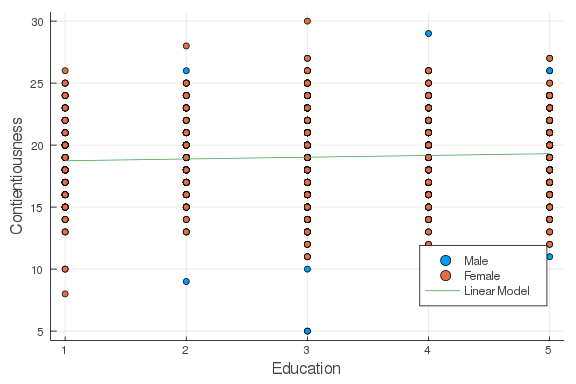

Setup
Before we start, I encourage you to uncomment the codes below and install the required packages that you do not have for this tutorial.
using Plots, StatsPlots
#= uncomment below to install packages
using Pkg
Pkg.add(["RDatasets", "Pipe", "DataFrames", "GLM",
"Plots", "StatPlots"])
=#Prior to running regression analyses, let me briefly go over three essential packages, Pipe, RDatasets, DataFrames, in handling data frames in Julia.
Brief Introduction to the Package Pipe
The package Pipe improves the base pipe operator (|>) in Julia. It allows you to represent the object that is piped from with an underscore _ in the functions that follow. For example, sqrt(sum([1, 2, 3])) involve two commands one applied to [1, 2, 3] and the other one applied to sum([1, 2, 3]). We can pipe these commands, stemming from the [1, 2, 3] object, using @pipe together with |>, as illustrated below.
using Pipe
@pipe [1, 2, 3] |> sum(_) |> sqrt(_)2.449489742783178The above code might have overkilled this simple task of taking a sqaure root of a sum, but piping will become very useful in handling a long series of commands. For more details of Pipe, please read the julia tutorial on [pipe] (https://syl1.gitbook.io/julia-language-a-concise-tutorial/useful-packages/pipe).
Brief Introduction to the Package RDatasets
The package RDatasets provides most of the base R datasets for Julia users to play around. We will be using the dataset bfi from the R package psych in this tutorial to explore regression analyses in Julia.
Lets read in the dataset bfi and drop out missing values.
using RDatasets
# show(RDatasets.datasets("psych"), allrows=true)
bfi = @pipe dataset("psych", "bfi") |> dropmissing(_)
println(names(bfi))["Variable", "A1", "A2", "A3", "A4", "A5", "C1", "C2", "C3", "C4", "C5", "E
1", "E2", "E3", "E4", "E5", "N1", "N2", "N3", "N4", "N5", "O1", "O2", "O3",
"O4", "O5", "Gender", "Education", "Age"]For a complete R documentation of this dataset, please refer to [this] (https://www.personality-project.org/r/html/bfi.html).
Brief Introduction to the Package DataFrames
For simplicity, lets wrangle our data and sum over the scores on the columns for agreeableness (A1 to A5) and for contienciousness (C1 to C5). Gender is a numeric variable in the original dataset, while it should better be treated as a binary variable. Lets also convert it into a categorical array using categorical.
transform() has similar function as mutate() in R, with which we can transform a column and save it into a new column in a dataframe. The operator => is pretty intuitive. In the first transform statment down below, we are basically asking Julia to take the columns between A1 and A5 in bfi, transform them by summing scores on the same row (=> ByRow(+)), and then save these transformed data into a new column called Asum.
Note that to call a column in a dataframe, we need to place an colon : before the column name.
using DataFrames
bfi = @pipe bfi |>
transform(_, Between(:A1, :A5) => ByRow(+) => :Asum) |>
transform(_, Between(:C1, :C5) => ByRow(+) => :Csum) |>
transform(_, :Gender => categorical => :Gender_bin)
describe(select(bfi, Between(:Asum, :Gender_bin)))37 DataFrame
Row variable mean min median max nmissing eltype
Symbol Union Any Union Any Int64 DataType
1 Asum 21.1632 5 22.0 30 0 Int64
2 Csum 19.0501 5 19.0 30 0 Int64
3 Gender_bin 1 2 0 CategoricalValue{In
t64
1 column om
itteddescribe() provides summary statistics of the selected columns of our newly created variables from Asum to Gender_bin. As can be seen in the summary table, Gender_bin has a data type of CategoricalValue{Int64,UInt32}. Through that way in our following regression analysis, gender will be treated as a categorical variable and automatically dummy coded.
For data wrangling in Julia using the package Dataframes, a [cheatsheet] (https://ahsmart.com/assets/pages/data-wrangling-with-data-frames-jl-cheat-sheet/DataFramesCheatSheet_v0.22_rev1.pdf) may come in handy here. I am a beginner Julia and Dataframes user. If you have a better way to optimize my codes, please let me know and I will be more than happy to learn it!
Linear Regression
Below are some summary statistics and a snapshot of the variables of interest for the following analyses.
describe(select(bfi, Between(:Education, :Gender_bin)))57 DataFrame
Row variable mean min median max nmissing eltype
Symbol Union Any Union Any Int64 DataType
1 Education 3.19141 1 3.0 5 0 Int64
2 Age 29.5103 3 26.0 86 0 Int64
3 Asum 21.1632 5 22.0 30 0 Int64
4 Csum 19.0501 5 19.0 30 0 Int64
5 Gender_bin 1 2 0 CategoricalValue{In
t64
1 column om
ittedfirst(select(bfi, Between(:Education, :Gender_bin)), 5)55 DataFrame
Row Education Age Asum Csum Gender_bin
Int64 Int64 Int64 Int64 Cat
1 3 21 28 22 2
2 2 19 14 15 1
3 1 21 24 17 1
4 1 17 14 19 1
5 5 68 23 18 1In our sample, do older people tend to be more agreeable than younger people? We can fit a linear model with Age as the predictor and Asum, the sum scores of agreeableness, as the outcome variable, and determine whether there is a positive association between these two variables.
The package GLM provides convenient ways that are analogous to the R functions lm() and glm() to specify linear models in Julia.
To build a linear model, we use lm(), specify the model equation within @formula(), and indicate the dataset after the formula.
using GLM
lm1 = lm(@formula(Asum ~ Age), bfi)StatsModels.TableRegressionModel{GLM.LinearModel{GLM.LmResp{Array{Float64,1
}},GLM.DensePredChol{Float64,LinearAlgebra.Cholesky{Float64,Array{Float64,2
}}}},Array{Float64,2}}
Asum ~ 1 + Age
Coefficients:
Coef. Std. Error t Pr(>|t|) Lower 95% Upper 95%
(Intercept) 20.4382 0.225823 90.51 <1e-99 19.9954 20.8811
Age 0.0245685 0.00719702 3.41 0.0007 0.010455 0.0386821
Unlike R, we do not need to additionally summarize lm1 to get a summary table of the outputs.
Equivalent to lm(), we can use the fit() function with the LinearModel argument.
fit1 = fit(LinearModel, @formula(Asum ~ Age), bfi)StatsModels.TableRegressionModel{GLM.LinearModel{GLM.LmResp{Array{Float64,1
}},GLM.DensePredChol{Float64,LinearAlgebra.Cholesky{Float64,Array{Float64,2
}}}},Array{Float64,2}}
Asum ~ 1 + Age
Coefficients:
Coef. Std. Error t Pr(>|t|) Lower 95% Upper 95%
(Intercept) 20.4382 0.225823 90.51 <1e-99 19.9954 20.8811
Age 0.0245685 0.00719702 3.41 0.0007 0.010455 0.0386821
lm(...) and fit(LinearModel, ...) do not differ in their type, output, and functionality. A quick check on their type:
typeof(lm1)StatsModels.TableRegressionModel{GLM.LinearModel{GLM.LmResp{Array{Float64,1
}},GLM.DensePredChol{Float64,LinearAlgebra.Cholesky{Float64,Array{Float64,2
}}}},Array{Float64,2}}typeof(fit1)StatsModels.TableRegressionModel{GLM.LinearModel{GLM.LmResp{Array{Float64,1
}},GLM.DensePredChol{Float64,LinearAlgebra.Cholesky{Float64,Array{Float64,2
}}}},Array{Float64,2}}which are essentially the same.
Extracting Model Information
We can use coef(), stderror(), and vcov() to extract coefficient estimates and standard errors of the coefficents, and the estimated variance-covariance matrix of the coefficient estimates, respectively.
coef(lm1)2-element Array{Float64,1}:
20.43821402633636
0.024568514618654096stderror(lm1)2-element Array{Float64,1}:
0.22582269777999403
0.007197020298763872vcov(lm1)22 Array{Float64,2}:
0.0509959 -0.00152855
-0.00152855 5.17971e-5To obtain statistics for model fit, we can use r2 for R^2 and deviance() for the weighted residual sum of squares.
r2(lm1)0.005189310057134855deviance(lm1)29411.99403563621predict() computes the predicted values of each individual in our sample.
predict(lm1)2236-element Array{Float64,1}:
20.9541528333281
20.905015804090787
20.9541528333281
20.85587877485348
22.10887302040484
21.10156392104002
20.880447289472134
20.92958431870944
21.69120827188772
21.248975008751945
21.15070095027733
21.248975008751945
21.003289862565406
20.978721347946752
20.978721347946752
21.02785837718406
21.15070095027733
21.199837979514637
21.666639757269067!!! note Follow-up Practice (1) Lets try to run a linear model to investigate whether contiouenciousness is predicted by education. How much variance is explained by this model?
Multiple Regression
We may suspect that the difference in agreeableness over years of age depend on someones education level. To investigate this, we can add an interation between Age and Education on Asum by Age & Education. Typically when we add an interaction term to a model, we include also the main effects of the variables. A shorthand of specifying both the main effects and interaction between the variables is Age * Education.
# the models below are equivalent
lm(@formula(Asum ~ Age + Education + Age & Education), bfi)StatsModels.TableRegressionModel{GLM.LinearModel{GLM.LmResp{Array{Float64,1
}},GLM.DensePredChol{Float64,LinearAlgebra.Cholesky{Float64,Array{Float64,2
}}}},Array{Float64,2}}
Asum ~ 1 + Age + Education + Age & Education
Coefficients:
Coef. Std. Error t Pr(>|t|) Lower 95% Upp
er 95%
(Intercept) 19.4241 0.651563 29.81 <1e-99 18.1463 20.70
18
Age 0.0831532 0.0211002 3.94 <1e-4 0.0417752 0.12
4531
Education 0.273547 0.200684 1.36 0.1730 -0.119999 0.66
7093
Age & Education -0.016346 0.0061294 -2.67 0.0077 -0.0283659 -0.00
432607
lm(@formula(Asum ~ Age * Education), bfi)StatsModels.TableRegressionModel{GLM.LinearModel{GLM.LmResp{Array{Float64,1
}},GLM.DensePredChol{Float64,LinearAlgebra.Cholesky{Float64,Array{Float64,2
}}}},Array{Float64,2}}
Asum ~ 1 + Age + Education + Age & Education
Coefficients:
Coef. Std. Error t Pr(>|t|) Lower 95% Upp
er 95%
(Intercept) 19.4241 0.651563 29.81 <1e-99 18.1463 20.70
18
Age 0.0831532 0.0211002 3.94 <1e-4 0.0417752 0.12
4531
Education 0.273547 0.200684 1.36 0.1730 -0.119999 0.66
7093
Age & Education -0.016346 0.0061294 -2.67 0.0077 -0.0283659 -0.00
432607
!!! note Follow-up Practice (2) Lets fit a model to explore whether there is an interaction between education and gender (Gender_bin) on contienciousness. How much did the variance explained by the model increasecompared to the model without the interaction (in reference to Practice (1)) increase?
Probit Regression
For the illustrative purpose, I arbitrarily define that a sum score above 20 out of 25 is a high score of agreeableness and dichotomize Asum to 1 or 0 accordingly.
bfi = @pipe transform(bfi,
:Asum => ByRow(function(x)
if x >= 20 1
else 0
end
end)
=> :Abin);
describe(select(bfi, :Abin))17 DataFrame
Row variable mean min median max nmissing eltype
Symbol Float64 Int64 Float64 Int64 Int64 DataType
1 Abin 0.70975 0 1.0 1 0 Int64Now because our outcome variable is a binary variable, it is more appropriate to model it with a binomial distribution and a probit link.
lm_probit = glm(@formula(Abin ~ Age), bfi, Binomial(), ProbitLink())StatsModels.TableRegressionModel{GLM.GeneralizedLinearModel{GLM.GlmResp{Arr
ay{Float64,1},Distributions.Binomial{Float64},GLM.ProbitLink},GLM.DensePred
Chol{Float64,LinearAlgebra.Cholesky{Float64,Array{Float64,2}}}},Array{Float
64,2}}
Abin ~ 1 + Age
Coefficients:
Coef. Std. Error z Pr(>|z|) Lower 95% Upper 95%
(Intercept) 0.319024 0.0832706 3.83 0.0001 0.155816 0.482231
Age 0.00798517 0.00269249 2.97 0.0030 0.00270799 0.0132623
An equivalent way to specify this probit model is
fit(GeneralizedLinearModel, @formula(Abin ~ Age), bfi, Binomial(), ProbitLink())StatsModels.TableRegressionModel{GLM.GeneralizedLinearModel{GLM.GlmResp{Arr
ay{Float64,1},Distributions.Binomial{Float64},GLM.ProbitLink},GLM.DensePred
Chol{Float64,LinearAlgebra.Cholesky{Float64,Array{Float64,2}}}},Array{Float
64,2}}
Abin ~ 1 + Age
Coefficients:
Coef. Std. Error z Pr(>|z|) Lower 95% Upper 95%
(Intercept) 0.319024 0.0832706 3.83 0.0001 0.155816 0.482231
Age 0.00798517 0.00269249 2.97 0.0030 0.00270799 0.0132623
Our probit model is as follows. \[ \Phi^{-1}(\text{High_Agreeableness}) = 0.319 + 0.008 \text{Age} \]
For a person of age 20, the predicted probit of scoring high on agreeableness is 0.479.
Note that the coefficients are probability z-scores and the prediction is a probit. To translate a probit back to a probability, we could use cdf() in the Distributions package.
Normal() by default specifies a normal distribution with a mean of 0 and a standard deviation of 1.
using Distributions
cdf(Normal(), .479)0.6840306856730872The predicted probability of someone at age 20 scoring high on agreeablness is 68.4%.
Logistic Regression
An alternative way to handle binary outcome variables is through logistic regression.
lm_logit = glm(@formula(Abin ~ Age), bfi, Binomial(), LogitLink())StatsModels.TableRegressionModel{GLM.GeneralizedLinearModel{GLM.GlmResp{Arr
ay{Float64,1},Distributions.Binomial{Float64},GLM.LogitLink},GLM.DensePredC
hol{Float64,LinearAlgebra.Cholesky{Float64,Array{Float64,2}}}},Array{Float6
4,2}}
Abin ~ 1 + Age
Coefficients:
Coef. Std. Error z Pr(>|z|) Lower 95% Upper 95%
(Intercept) 0.497558 0.139339 3.57 0.0004 0.224458 0.770657
Age 0.0135925 0.00455195 2.99 0.0028 0.00467084 0.0225141
Similarly, an equivalent way to specify this logistic model is
fit(GeneralizedLinearModel, @formula(Abin ~ Age), bfi, Binomial(), LogitLink())StatsModels.TableRegressionModel{GLM.GeneralizedLinearModel{GLM.GlmResp{Arr
ay{Float64,1},Distributions.Binomial{Float64},GLM.LogitLink},GLM.DensePredC
hol{Float64,LinearAlgebra.Cholesky{Float64,Array{Float64,2}}}},Array{Float6
4,2}}
Abin ~ 1 + Age
Coefficients:
Coef. Std. Error z Pr(>|z|) Lower 95% Upper 95%
(Intercept) 0.497558 0.139339 3.57 0.0004 0.224458 0.770657
Age 0.0135925 0.00455195 2.99 0.0028 0.00467084 0.0225141
Now our logistic model is as follows. \[ logit(\text{High_Agreeableness}) = 0.498 + 0.014 \text{Age} \]
For a person of age 20, the predicted logit of scoring high on agreeableness is 0.778. Now the prediction is represented in terms of logit. To make it more interpretable, we can simply exponentiate the logit to get the odds ratio, or use the following formula to get the probability:
\[ \hat{\pi} = \frac{exp(0.498 + 0.014)}{1 + exp(0.498 + 0.014)} \]
where \hat{\pi} is the predicted probability of someone scoring high on agreeableness.
exp(.778)/(1 + exp(.778))0.6852489081587367Consistent with the result from probit regression, the predicted probability of someone at age 20 scoring high on agreeablness is 68.5%.
Visualization
Lets cover the answers of Follow-up Practice (1) and (2) here.
# Practice (1)
lm3 = fit(LinearModel, @formula(Csum ~ Education), bfi)StatsModels.TableRegressionModel{GLM.LinearModel{GLM.LmResp{Array{Float64,1
}},GLM.DensePredChol{Float64,LinearAlgebra.Cholesky{Float64,Array{Float64,2
}}}},Array{Float64,2}}
Csum ~ 1 + Education
Coefficients:
Coef. Std. Error t Pr(>|t|) Lower 95% Upper 95%
(Intercept) 18.5942 0.176512 105.34 <1e-99 18.2481 18.9403
Education 0.14285 0.0522318 2.73 0.0063 0.0404219 0.245278
# Practice (2)
lm4 = fit(LinearModel, @formula(Csum ~ Education*Gender_bin), bfi)StatsModels.TableRegressionModel{GLM.LinearModel{GLM.LmResp{Array{Float64,1
}},GLM.DensePredChol{Float64,LinearAlgebra.Cholesky{Float64,Array{Float64,2
}}}},Array{Float64,2}}
Csum ~ 1 + Education + Gender_bin + Education & Gender_bin
Coefficients:
Coef. Std. Error t Pr(>|t|) Lower
95% Upper 95%
(Intercept) 18.9793 0.287144 66.10 <1e-99 18.4162
19.5424
Education 0.0693464 0.0844421 0.82 0.4116 -0.0962
469 0.23494
Gender_bin: 2 -0.607298 0.364028 -1.67 0.0954 -1.3211
7 0.106571
Education & Gender_bin: 2 0.119855 0.10743 1.12 0.2647 -0.0908
195 0.330529
Note that Gender_bin is dummy coded with male (1) as 0 and female (2) as 1. The default in GLM is dummy coding, but we can specify a different contrast coding. More details on contrast coding can be found [here] (https://juliastats.org/StatsModels.jl/stable/contrasts/).
# extracting coefficients
lm3_b0, lm3_b1 = coef(lm3);
lm4_b0, lm4_b1, lm4_b2, lm4_b3 = coef(lm4);We will use the package Plots for visualizing the relationship between variables in the fitted models. The package StatsPlots is an extension of Plots that supports plotting with DataFrame objects.
@df bfi scatter(
:Education,
:Csum,
group = :Gender,
legend = :bottomright,
label = ["Male" "Female"],
xlabel = "Education",
ylabel = "Contientiousness")
plot!((x) -> lm3_b0 + lm3_b1 * x, 1, 5, label = "Linear Model")
@df bfi scatter(
:Education,
:Csum,
group = :Gender,
legend = :bottomright,
label = ["Male" "Female"],
xlabel = "Education",
ylabel = "Contienciousness",
size=(690,460))
plot!((x) -> lm4_b0 + lm4_b1 * x + lm4_b2 * 0 + lm4_b2 * x * 0,
1, 5, label = "Male", linecolor = "blue")
plot!((x) -> lm4_b0 + lm4_b1 * x + lm4_b2 * 1 + lm4_b2 * x * 1,
1, 5, label = "Female", linecolor = "red")
I also made reference to this webpage to create the plots above.
Perhaps because the research questions I posed here were not so interesting, there was not much interesting to observe from the analysis outputs and the plots. But I hope you enjoy this tutorial in doing regression analyses with Julia :)